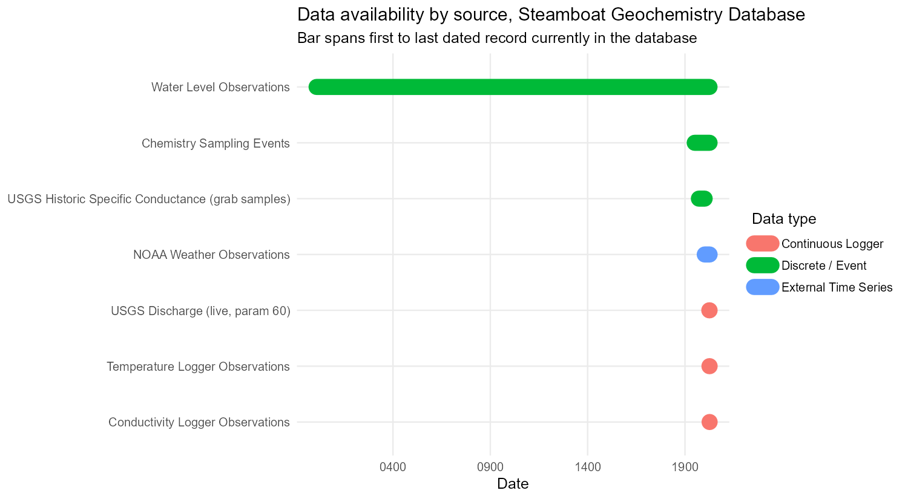

Featured finding: a chloride mass-balance analysis built on this database estimates thermal water inflow to Steamboat Creek at roughly 27 L/s today, below the 60 L/s (45-90 L/s) average Sorey and Spielman (2017) reported for 2008-2016, and points toward reactivation of the existing conduit network rather than a new geothermal source. Presented at the 2026 Geothermal Rising Conference (Irvin and Lindsey, 2026) as a direct continuation of Lindsey et al. (2026)’s account of the eruption. See the Results page for the full picture, and Timeline for how the event itself unfolded.
Steamboat Hills is one of the longest-operating geothermal fields in the Great Basin, and it is not standing still. Decades of production and reinjection by Ormat Technologies have reshaped the plumbing of the system underground, and a geyser-like eruption at the Lower Sinter Terrace re-opened the question of how fluids are actually moving beneath the surface today. Answering that question well requires more than any single dataset can offer: it takes groundwater chemistry from newly re-mapped springs and wells, decades of chloride and temperature records held by state agencies, a real-time conductivity sensor standing in for chloride discharge in Steamboat Creek, and a growing archive of well construction records and production/injection routing. This project’s purpose is to bring all of that together: cleanly, reproducibly, and in a form that supports both day-to-day exploration and rigorous statistical and spatial modeling.
Three objectives anchor the work. First, characterize how the outflow of the system has changed since the eruption, by remapping the springs Ormat currently lists as inactive and comparing today’s spring and well chemistry, temperatures, and chloride discharge against Michael Sorey’s historical baseline. Second, build a live proxy for chloride discharge using in-stream conductivity, and determine how infrequently chloride itself actually needs to be sampled to keep that proxy trustworthy, a direct, practical question about monitoring design, not just chemistry. Third, map the subsurface hydrologic and chemical state of the field using well chemistry and water levels, in a form ready to hand to ArcGIS for interpolation and spatial statistics, so that patterns invisible in any one well become visible across the whole field.
These figures update automatically every time the pipeline runs, so the numbers above reflect the database as it stands today, not a snapshot frozen at some earlier point in the project.
Every one of those data types arrives in its own shape: NDEP hands over regulatory PDFs and CSVs on its own schedule, field crews fill out spreadsheets in the field, temperature and conductivity loggers dump proprietary export files, and USGS and NOAA publish their own time series in their own formats. A spreadsheet-per-source approach makes it easy to lose track of which version of which file is current, and nearly impossible to ask a question that spans sources, like “does the conductivity signal in the creek track the chemistry we measured at the springs two weeks earlier?”, without manual, error-prone reassembly every time. This project instead pushes every source through its own small, dedicated ingestion script into a single normalized SQLite database, so that a well’s location, its water levels, its chemistry, and its role in Ormat’s production network are all facts about the same row, joinable in one query rather than three lookups across three files.
That structure also buys reproducibility almost for free. Nothing is ever hand-edited inside the database; every transformation lives in a script that can be re-run from the raw files, every source carries a record of exactly where it came from, and re-running an ingestion twice never duplicates data. The Pipeline page walks through how that actually works, and the Data System page shows what has accumulated so far.
The chart below is generated directly from the database and shows, for every major data source, the earliest and latest dated record currently on file. It is a useful way to see at a glance how a decades-long regulatory and chemistry record is now being layered with a brand-new generation of high-frequency sensors.

Notice the gap: the historical chemistry and specific-conductance record thins out after the early 2000s, and then a cluster of continuous instruments (temperature loggers, a conductivity logger in Steamboat Creek, and live USGS discharge) all start up together in 2025-2026. That gap, and the deliberate effort to bridge it, is a running theme across the rest of this site.
Where this is headed next: the database is deliberately built to feed three pieces of modeling that are still ahead: geochemical speciation and mixing models in PHREEQC, a calibrated conductivity-to-chloride relationship that pins down how often chloride really needs to be sampled, and a potentiometric/contaminant-transport surface built by interpolating well chemistry and water levels in ArcGIS. See the Results page for where each of those stands today.